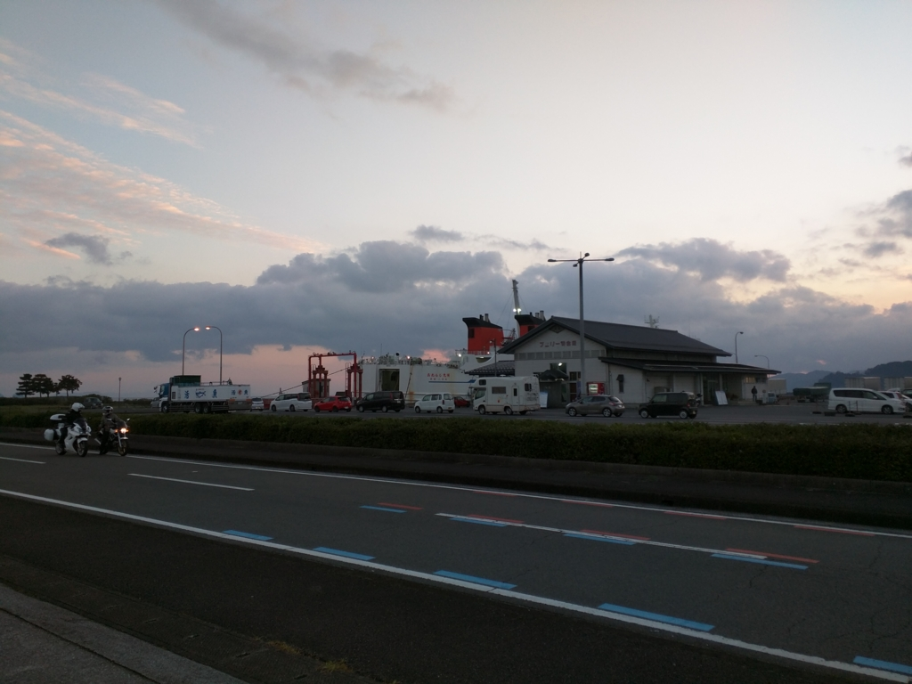

福岡その三：（松山 →）臼杵 → 博多
公開日：

今日は臼杵から博多へ向かいます（♪てぃてぃてぃってぃー てぃってぃってぃー てぃーてぃー
臼杵城

臼杵（うすき）は豊後水道を挟んで愛媛の対岸にある人口4万人ほどの小さな街。Wikipedia によるとマラソンの宗兄弟の生まれ故郷なのだそうな。
臼杵港から臼杵駅へてくてくと歩を進めると、途中に臼杵城の城門（卯寅門）がありました。先を急ぐ旅ではありますが、ちょっと寄り道してくぐってみます。
臼杵城は、大友宗麟が臼杵湾に浮かぶ丹生島（にうじま）に築いた海城で、島の形が亀に似ていたことから別名亀城（きじょう）ともいいます。……当時は、断崖絶壁で四方を海に囲まれた珍しい城だったそうです。……
天正14年（1586年）、防御性にも優れていた宗麟の居城臼杵城にも、薩摩地方から島津の軍勢が迫ってきて、最大の危機が訪れます。しかし、宗麟は、ポルトガル人から輸入していた当時の大砲「国崩（くにくずし）」で島津軍を撃退したといわれています。
公園内には、「国崩」のレプリカもあります。
寛永時代の図で言うと、右端の海に面した出口が卯寅門だそうで。今歩いてきたところは、もともとはすべて海だったんだなぁ。
江戸時代は臼杵藩の藩庁があったとの由。始祖は稲葉貞通。西美濃三人衆の一人として有名な稲葉良通（一鉄）の嫡男で、関ヶ原で西軍を裏切ったことで一万石の加増を受け、美濃から移ってきたのだそうな。
ホントはもっとゆっくりしたかったけど、あんまりモタモタしていると博多につくまえに日が暮れてしまうので、30分弱で退散。
臼杵駅からソニックへ

臼杵港から30分ほど歩いたのかな？（臼杵城で寄り道しちゃったのでよくわかんなくなった／(^o^)＼） Google Map 神のお導きにより、とくに迷うこともなく臼杵駅に到着。駅前には、なんか変な大仏が座っていた。国宝の臼杵石仏を模したものらしいというのを後で知る。
朝の 7:30。ここからは特急ソニックで博多へ向かうことになる。指定席はすでに満席とのことだったけど、自由席でも座れると窓口で教えてもらう。「往復ですか？」と聞かれたので、土地の人は往復で切符を買うことが多いのだろう。たぶん割引が効くのだと思う。
このソニック、たいへん快適だった（JR 四国比。ちょっと古びてところどころ傷こそあるが、シートはなんと本皮革張り。なんかゴージャスだ。ジーパンだとお尻がツルツルして落ち着かないという欠点はあるけれど、ドカッと腰を下ろすといい気分。速度も在来線特急としては日本最速で、振り子式の車両が山間部を豪快に駆け抜けていくさまは見ていて痛快でもある。われらが予讃線特急もこれぐらいならうれしいのだけど……orz
博多駅までの所要時間は3時間弱。ちょっとおもしろいのは、小倉駅で進行方向の折り返しがあることだろう。みんな一度席を外し、新しい進行方向へ合わせるため、協力して座席を回転させる。個人的には後ろ向きに走っていても何ら苦痛は感じないのだけど、マメなことだ。僕の周りの客は外国人が多かったので、身振り手振りでやり取りしながら、ワイワイガヤガヤ、すったもんだで座席を展開させた。途中からは満席で通路まで人が溢れていたし、小倉で降りる人も多く（新幹線に乗り換えれば博多にちょっと早くつける）、この作業は割と大変だった。
10:30。無事、博多駅に到着。もしかしたら生まれて初めての福岡かもしれない？（小さなころに訪れたことがある可能性は微レ存）
プロ生福岡と福岡グルメの話は次回に続く――かもかも。